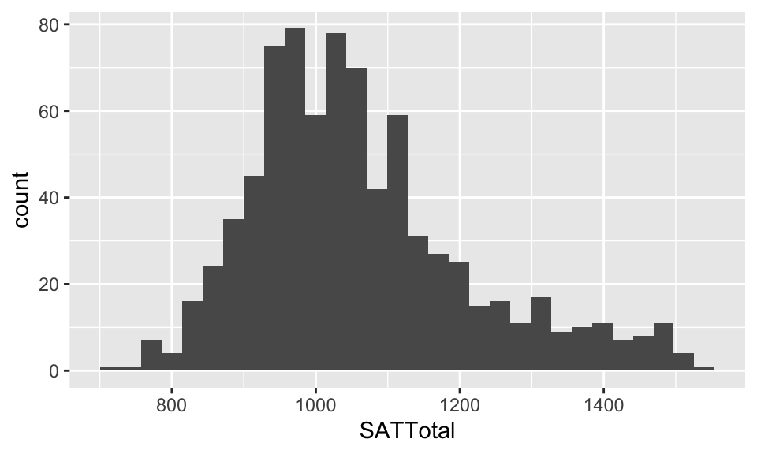
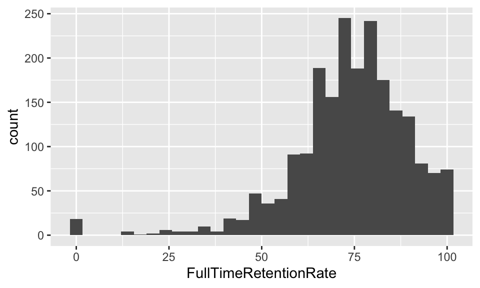

# Load data from IPEDS.
library(ipeds)
library(psych)
library(ggplot2)
data(surveys)
directory <- getIPEDSSurvey('HD', 2013)
admissions <- getIPEDSSurvey("IC", 2013)
retention <- getIPEDSSurvey("EFD", 2013)
# There are a lot of columns in these data frames. This will subset the data
# frames to include only the variables we are interested in. We will also rename
# the columns to be more descriptive.
directory <- directory[,c('unitid', 'instnm', 'sector', 'control')]
retention <- retention[,c('unitid', 'ret_pcf', 'ret_pcp')]
names(retention) <- c("unitid", "FullTimeRetentionRate", "PartTimeRetentionRate")
admissions <- admissions[,c('unitid', 'admcon1', 'admcon2', 'admcon7',
'applcn', 'admssn', 'enrlt', 'satnum', 'satpct', 'actnum', 'actpct',
'satvr25', 'satvr75', 'satmt25', 'satmt75', 'satwr25', 'satwr75',
'actcm25', 'actcm75')]
names(admissions) <- c("unitid", "UseHSGPA", "UseHSRank",
"UseAdmissionTestScores", "ApplicantsTotal", "AdmissionsTotal",
"EnrolledTotal", "NumSATScores", "PercentSATScores", "NumACTScores",
"PercentACTScores", "SATReading25", "SATReading75", "SATMath25",
"SATMath75", "SATWriting25", "SATWriting75", "ACTComposite25",
"ACTComposite75")
# Recode these variables to factors.
admissionsLabels <- c("Required",
"Recommended",
"Neither required nor recommended",
"Do not know",
"Not reported",
"Not applicable")
admissions$UseHSGPA <- factor(admissions$UseHSGPA,
levels=c(1,2,3,4,-1,-2),
labels=admissionsLabels)
admissions$UseHSRank <- factor(admissions$UseHSRank,
levels=c(1,2,3,4,-1,-2),
labels=admissionsLabels)
admissions$UseAdmissionTestScores <- factor(admissions$UseAdmissionTestScores,
levels=c(1,2,3,4,-1,-2),
labels=admissionsLabels)
# Merge the three data frames to one using the unitid column
# (unique identifier for the school).
ret <- merge(directory, admissions, by="unitid")
ret <- merge(ret, retention, by="unitid")
# Exclude schools that don't have one of these criteria.
ret <- ret[ret$UseAdmissionTestScores %in%
c('Required', 'Recommended', 'Neither required nor recommended'),]
# IPEDS codes missing values as '.' which means R imports the data as
# characters. This will convert those columns to numeric columns and any
# instance of '.' will become NA (i.e. R's representation of a missing value).
ret$SATMath75 <- as.numeric(ret$SATMath75)
ret$SATMath25 <- as.numeric(ret$SATMath25)
ret$SATWriting75 <- as.numeric(ret$SATWriting75)
ret$SATWriting25 <- as.numeric(ret$SATWriting25)
ret$NumSATScores <- as.integer(ret$NumSATScores)
# Since IPEDS reports the 25th and 75th percentile, we will use the mean of
# these two as a proxy of the median (i.e center of the distribution).
ret$SATMath <- (ret$SATMath75 + ret$SATMath25) / 2
ret$SATWriting <- (ret$SATWriting75 + ret$SATWriting25) / 2
ret$SATTotal <- ret$SATMath + ret$SATWriting
# Calculate acceptance rate. This is a proxy for selectivity of the school.
ret$AcceptanceTotal <- as.numeric(ret$AdmissionsTotal) /
as.numeric(ret$ApplicantsTotal)
# Drop any unused factor levels.
ret$UseAdmissionTestScores <- as.factor(
as.character(ret$UseAdmissionTestScores))DATA 606 Data Project Proposal
Data Preparation
Research question
You should phrase your research question in a way that matches up with the scope of inference your dataset allows for.
Are SAT scores predictive of first year retention?
Cases
What are the cases, and how many are there?
Each case represents a College or University in the united states. There 2281 observations in the given data set.
Data collection
Describe the method of data collection.
Data is collected by the National Center for Educational Statistics (NCES) as part of the Integrated Postsecondary Data System (IPEDS). Data is submitted by Colleges and University annually.
Type of study
What type of study is this (observational/experiment)?
This is an observational study.
Data Source
If you collected the data, state self-collected. If not, provide a citation/link.
Data is collected by NCES and is available online here: http://nces.ed.gov/ipeds/Home/UseTheData For this project, data was extracted using the ipeds R package.
Ginder, S.A., Kelly-Reid, J.E., and Mann, F.B. (2014). 2013-14 Integrated Postsecondary Education Data System (IPEDS) Methodology Report (NCES 2014-067). U.S. Department of Education. Washington, DC: National Center for Education Statistics. Retrieved [date] from http://nces.ed.gov/pubsearch.
Response
What is the response variable, and what type is it (numerical/categorical)?
The response variable is first year retention and is numerical.
Explanatory
What is the explanatory variable, and what type is it (numerical/categorical)?
The explanatory variable is median SAT score and is numerical.
Relevant summary statistics
Provide summary statistics relevant to your research question. For example, if you’re comparing means across groups provide means, SDs, sample sizes of each group. This step requires the use of R, hence a code chunk is provided below. Insert more code chunks as needed.
describe(ret$SATTotal) vars n mean sd median trimmed mad min max range skew kurtosis
X1 1 798 1060.86 153.08 1035 1046.06 127.13 715 1540 825 0.86 0.51
se
X1 5.42describe(ret$FullTimeRetentionRate) vars n mean sd median trimmed mad min max range skew kurtosis se
X1 1 2091 74.04 15.64 75 75.22 13.34 0 100 100 -1.32 3.96 0.34table(ret$UseAdmissionTestScores, useNA='ifany')
Neither required nor recommended Recommended
621 336
Required
1324 prop.table(table(ret$UseAdmissionTestScores, useNA='ifany')) * 100
Neither required nor recommended Recommended
27.22490 14.73038
Required
58.04472 describeBy(ret$FullTimeRetentionRate,
group = ret$UseAdmissionTestScores, mat=TRUE) item group1 vars n mean sd median
X11 1 Neither required nor recommended 1 458 73.99127 20.06139 77
X12 2 Recommended 1 320 69.01250 19.36645 72
X13 3 Required 1 1313 75.27494 12.26846 76
trimmed mad min max range skew kurtosis se
X11 76.28804 16.3086 0 100 100 -1.3444110 2.593268 0.9374073
X12 70.96094 14.8260 0 100 100 -1.2316881 2.239823 1.0826175
X13 75.69648 11.8608 0 100 100 -0.6468744 1.991136 0.3385771ggplot(ret, aes(x=SATTotal)) + geom_histogram()
ggplot(ret, aes(x=FullTimeRetentionRate)) + geom_histogram()